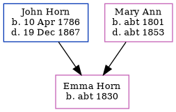

Emma Horn c1830 -
[ Home ] | [ Calendar ] | [ Surnames Index ] | [ Family History ]A servant at home and the child of John Horn (a laborer) and Mary Ann, Emma Horn, the three times great-aunt of Nigel Horne, was born in Margate, Kent, England c. 1830.
Throughout her life, she lived at Chapel Hill in Margate on Jun 6, 18411 and on Mar 30, 18512.
Parents
- John was born on Apr 10, 1786
- Mary Ann was born c. 1801
Citations
- 1841 England, Wales & Scotland Census - Findmypast (was age 11 and the daughter of the head of the household)
- 1851 England, Wales & Scotland Census - Findmypast (was age 21 and the daughter of the head of the household)
Media
1841 England, Wales & Scotland Census - GBC/1841/0013957362
Family Tree
Generated by Ged2Site. Last updated on Jul 20, 2025